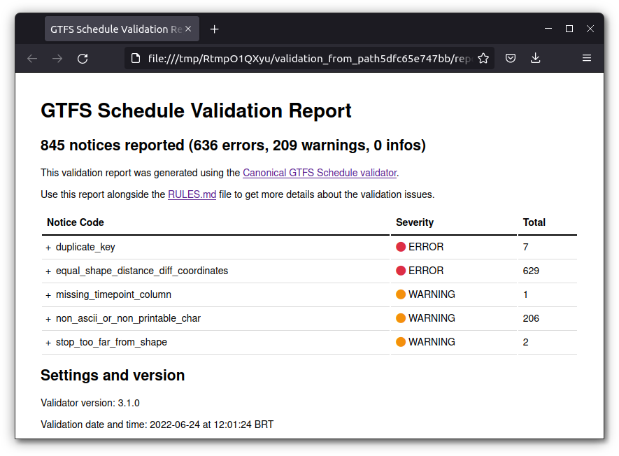

Transport planners and researchers very frequently want to assess the quality of the GTFS feeds they have produced and consumed. Are the feeds structured according to the best practices agreed by members of the larger GTFS community? Are tables and fields adequately formatted? Is the information described in the feed reasonable (vehicle speeds, stop locations, etc.)? These are some of the questions that may arise when dealing with GTFS data.
In order to answer these puzzling questions,
gtfstools includes validate_gtfs(), a
function that wraps the Canonical GTFS
Validator developed by MobilityData. The validator requires Java 11
or higher to run - you can check the version you have currently
installed with the command java -version on a terminal
session or with the command system("java -version") from
your R session. If need be, you can download Java 11 from https://www.oracle.com/java/technologies/downloads.
Using validate_gtfs() is very simple and requires no
more than a few function calls. First we need to download the validator
command-line tool. We can do it manually from MobilityData releases, or
we can use download_validator(). This function takes a path
to a directory where the validator should be saved to and a validator
version, which defaults to the latest release, and returns the path to
the downloaded validator. Please note that manually downloaded
validators should be saved with the same filename convention used by the
function (i.e. gtfs-validator-vX.Y.Z.jar). This is
important to make sure that our validation function can correctly parse
the command-line tool version, which controls some of its behavior.
library(gtfstools)
latest_validator <- download_validator(tempdir())
latest_validator
#> [1] "/tmp/RtmpyV9ENr/gtfs-validator-v6.0.0.jar"The second (and final) step is actually running
validate_gtfs(). To do that we need some GTFS data, which
the function accepts in varying formats: it can be a GTFS object, as
created with read_gtfs(), a path to local GTFS file, an URL
to a feed or a path to a local directory containing the GTFS data. It
also takes a path to the directory where the validator output should be
saved to and the path to the validator, previously generated with
download_validator(). Let’s see how it works, using the
same GTFS data in three different formats:
data_path <- system.file("extdata/spo_gtfs.zip", package = "gtfstools")
path_output_dir <- tempfile("validation_from_path")
validate_gtfs(data_path, path_output_dir, latest_validator)
list.files(path_output_dir)
#> [1] "report.html" "report.json" "system_errors.json"
#> [4] "validation_stderr.txt"As we can see, the validation generates a few output files:
-
report.html, shown below, summarizes the validation results in a nicely formatted HTML page (only available when using validator v3.1.0 or higher); -
report.jsonsummarizes the exact same information, but in JSON format, which can be used to easily parse and process the results; -
system_errors.jsonsummarizes eventual system erros that may have happened during the validation and may compromise the results; -
validation_stderr.txtlists the informative messages sent by the command-line tool to the standard error output stream, which includes the list of validators in use, eventual error messages, etc; - had the command-line tool printed anything to the standard output
stream, the content would have been saved in
validation_stdout.txt1.

Had we run the validator using the same GTFS data in different formats (an URL or a GTFS object, for example) the results would be exactly the same:
gtfs_url <- "https://github.com/ipeaGIT/gtfstools/raw/main/inst/extdata/spo_gtfs.zip"
gtfs <- read_gtfs(data_path)
url_output_dir <- tempfile("validation_from_url")
validate_gtfs(gtfs_url, url_output_dir, latest_validator)
object_output_dir <- tempfile("validation_from_object")
validate_gtfs(gtfs, object_output_dir, latest_validator)
validation_content <- function(path) {
report_json_path <- file.path(path, "report.json")
suppressWarnings(report_json_content <- readLines(report_json_path))
return(report_json_content)
}
path_output_content <- validation_content(path_output_dir)
url_output_content <- validation_content(url_output_dir)
object_output_content <- validation_content(object_output_dir)
identical(path_output_content, url_output_content)
#> [1] FALSE
identical(path_output_content, object_output_content)
#> [1] FALSEOnce again, it’s important to acknowledge that
validate_gtfs() only exists thanks to the hard-work of
folks at MobilityData/gtfs-validator.
A huge shoutout to them!